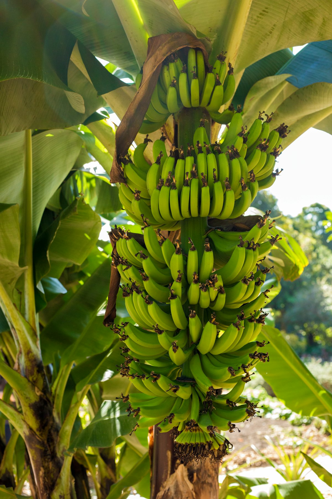
Shade for the coffee
Banana leaves shield young coffee from strong sun, keeping the trees cooler in the dry months.
Home / The farm
How the farm works
Our coffee grows in the shade of banana plants. It is an old East African way of farming that protects the coffee, feeds the soil and gives the farm a harvest in every month of the year.
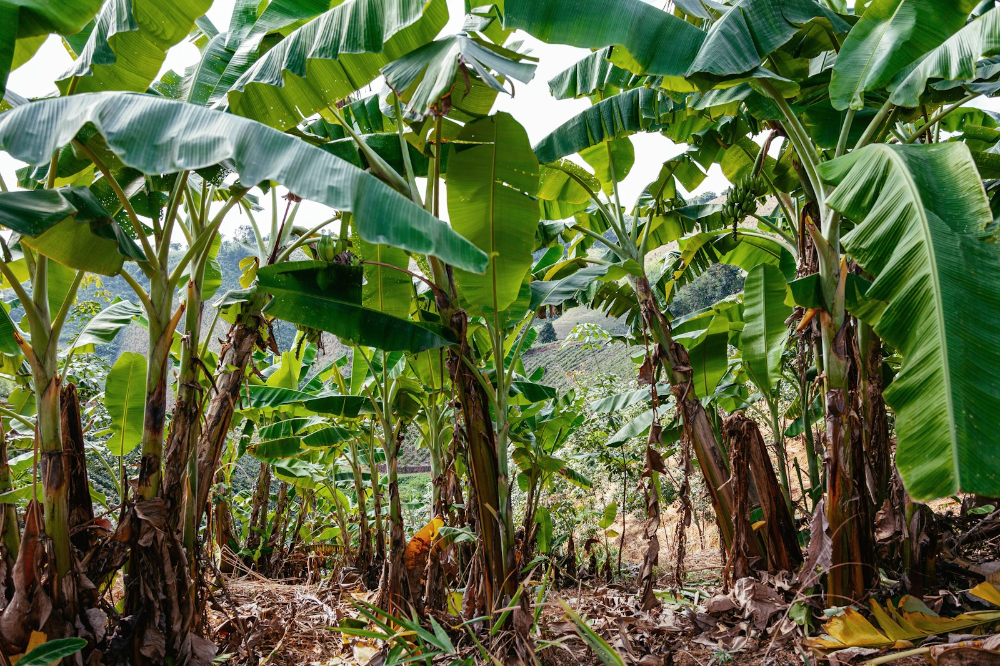
Intercropping
Coffee and banana intercropping is widely promoted across East Africa as a climate-smart way to farm. Here is what it means on our eight acres.

Banana leaves shield young coffee from strong sun, keeping the trees cooler in the dry months.
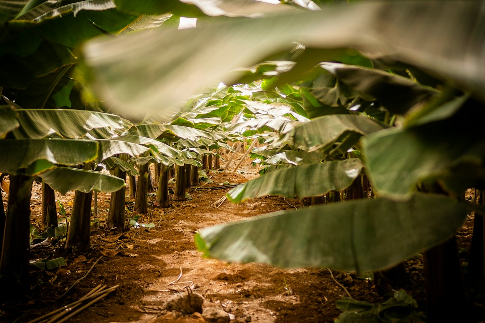
Old leaves and stems are cut and laid on the ground. They hold moisture in and slowly feed the soil.
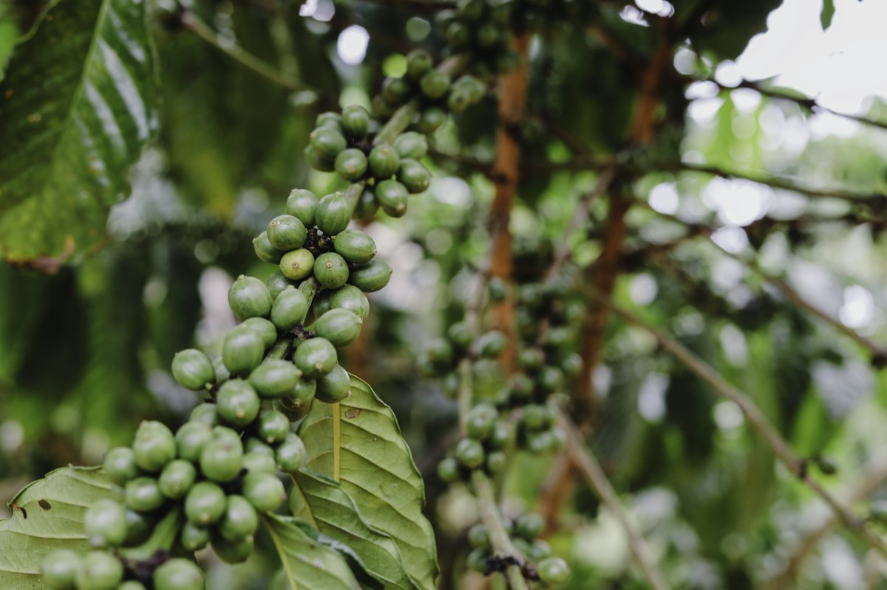
Bananas fruit in every season, so there is something to sell while the coffee ripens.
From flower to bag
Quality is decided on the farm, long before a buyer sees a bag. These are the steps we follow.
Old stems are pruned and the ground is weeded by hand, so energy goes into the cherries.
We pick red, ripe cherries and leave green ones to ripen. Banana bunches are cut when the fingers are full and rounded.
Cherries are spread thin on clean tarpaulins, turned through the day and covered at night and in rain.
Stones, sticks and bad cherries are picked out before the coffee is bagged and stored off the ground.
Every bag is weighed in front of the buyer and the price is agreed before payment.
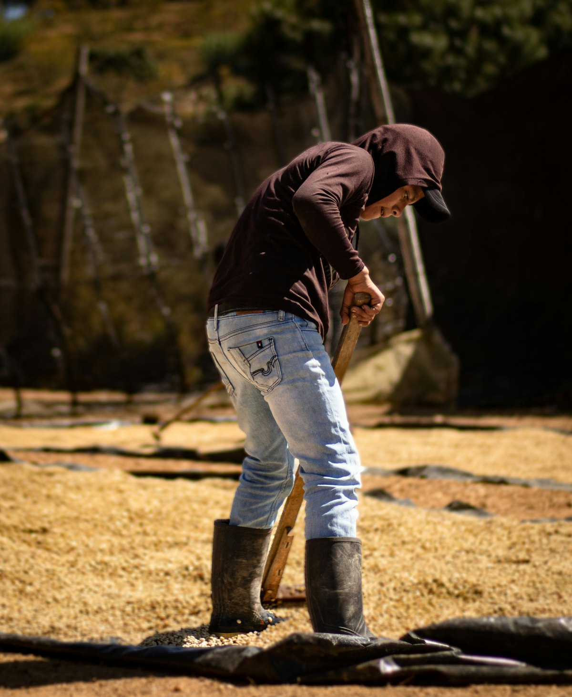
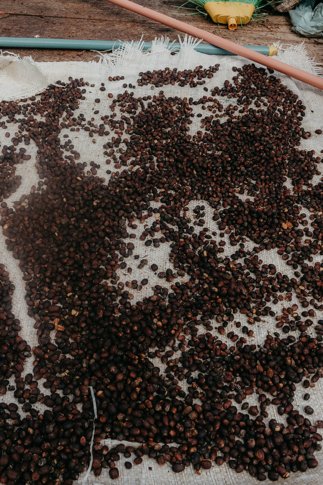
The farm year
Uganda has two rainy seasons, and the farm’s work follows them. Ask us what is ready this month.
Planting gaps, mulching and weeding while the ground is soft.
Main picking when the cherries turn red, plus a smaller fly crop between seasons.
Sun-drying, sorting and bagging coffee for buyers.
Banana bunches are cut to order, all year round.
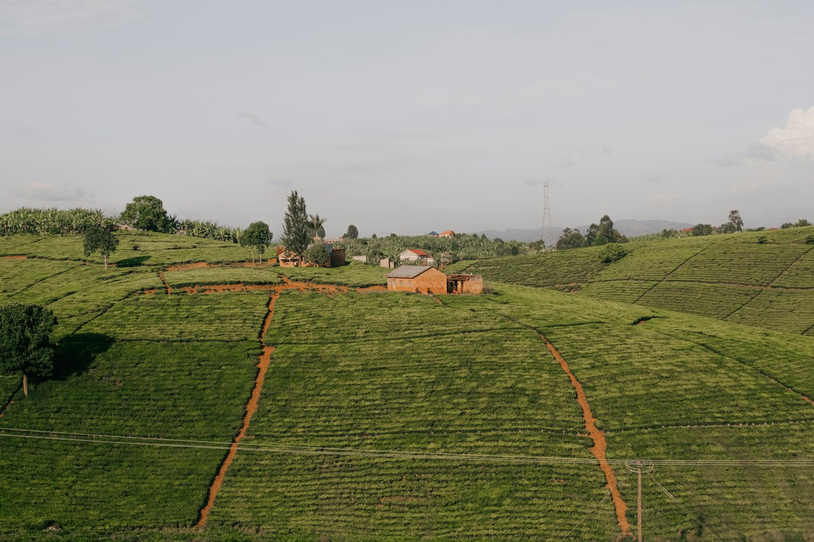
Farm visits
Coffee buyers, partners and regular customers are welcome to visit by appointment. It is the best way to see how the coffee is grown, dried and stored.
Visits are free for buyers. Monday to Saturday, by appointment.
Arrange a visit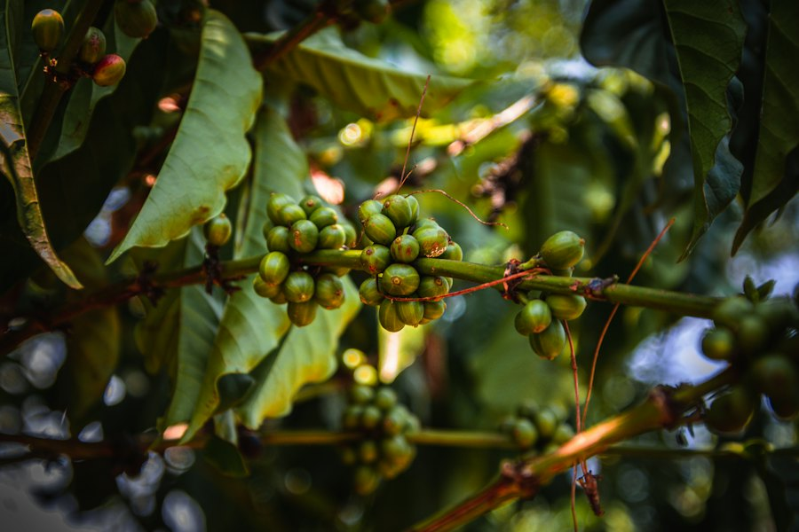
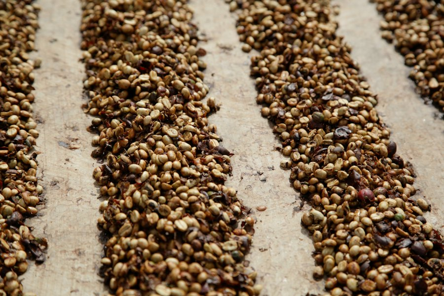
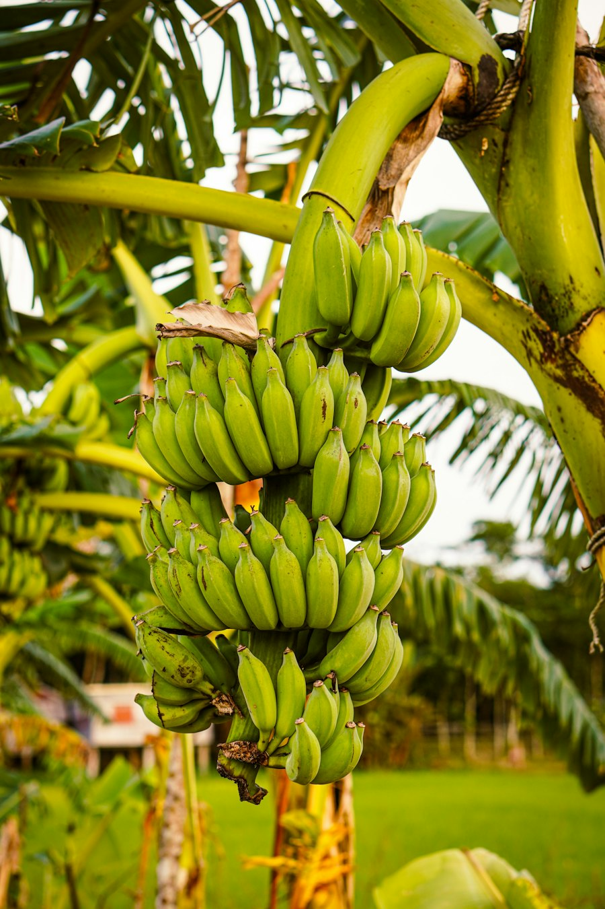
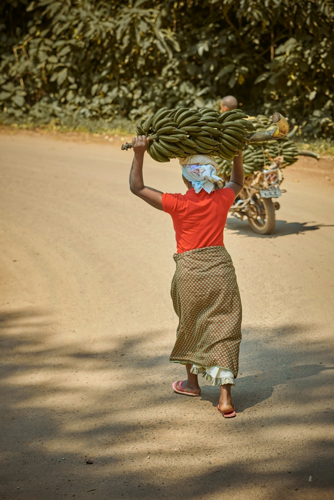
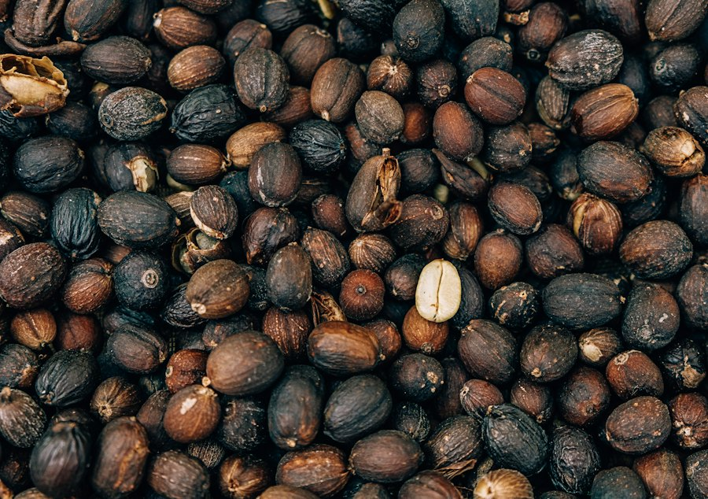
Background on coffee–banana intercropping: IPS News.
Book a farm visit or send an order. We reply on WhatsApp.